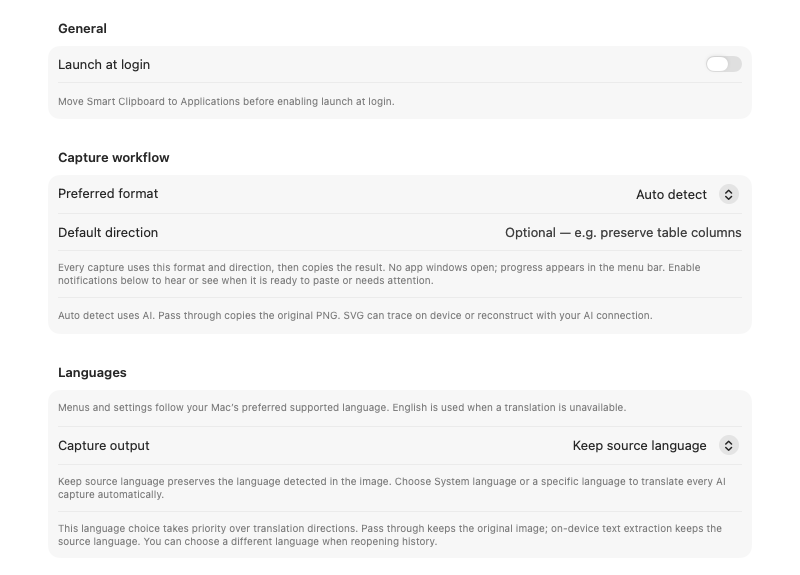
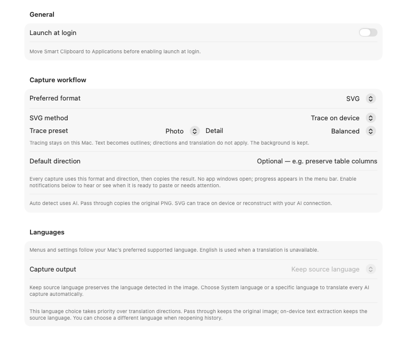
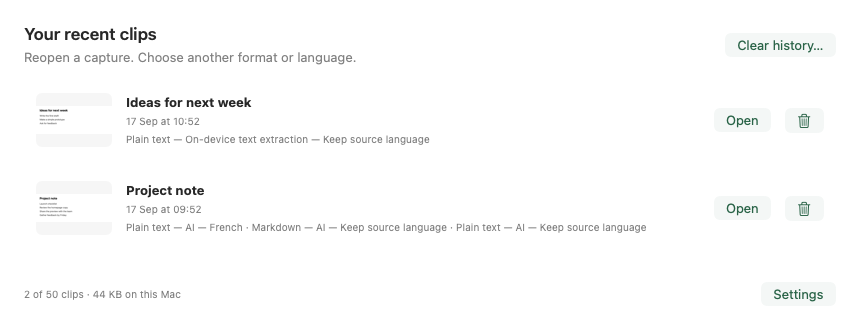

Smart Clipboard
Capture something on your screen. Paste something useful.
A quiet Mac menu-bar app that turns a screenshot into text, a table, structured data or SVG. Set your preferences once, then capture and paste without opening the app.
Download for Mac · Apple Silicon · macOS 14+ · Signed and notarized
Current version: 0.4 preview build 15. Known preview limitations.
Get started
- Install: open the DMG and drag Smart Clipboard into Applications. Open it and look for Clip in the menu bar.
- Set up once: open Clip → Settings & Status. Choose your output in General, and an AI connection if needed.
- Capture and paste: close Settings, press ⌃⌘R, select an area, wait for Clip ✓, then press ⌘V in your destination app.
Use ⌃⌘W for a window. Space switches selection modes; Escape cancels. Your saved custom shortcuts take precedence. Approve Screen Recording when macOS asks.
Choose what you want to paste
{kind=link}

- Auto detect: let AI choose a useful format.
- Plain text, Markdown, HTML, JSON or YAML: choose a specific editable result.
- Pass through: keep the image, without AI.
- SVG: trace shapes locally or reconstruct with AI.
For AI processing, use your own cloud account or Local / oMLX. Connection setup →
Turn a picture into SVG
{kind=link}

Choose Photo, Logo or Line drawing, then capture as usual. Balanced keeps files smaller; Detailed preserves more shapes and colours. Paste the SVG source, or use History → Open → Save… to import it into a vector editor.
Tracing keeps the background and turns words into outlines. For model-based reconstruction, choose Reconstruct with AI instead. Tracing guide →
Reuse a capture
{kind=link}

Choose another format or language, then convert. Saved formats reopens earlier results; Copy puts one on the clipboard. Set your history limit or clear saved clips in Settings → History.
Know when it is ready
Clip … means working. Clip ✓ means ready to paste. Clip ! means open the menu to read the problem.
Enable optional success/failure notifications and sound in General. Focus or screen sharing can suppress alerts; the menu status remains available. Notification help →
Need a hand?
Illustrated user guide · Local model setup · Translation · Troubleshooting
The app follows macOS light/dark appearance and supports English, Italian, Spanish, French and German. Captures keep their source language unless you enable translation. Local tracing works offline; AI captures go to your selected connection. Privacy details.
Screenshots show the current app’s views with sample data. This is a preview: AI results need review, cloud coverage and full accessibility acceptance remain incomplete.